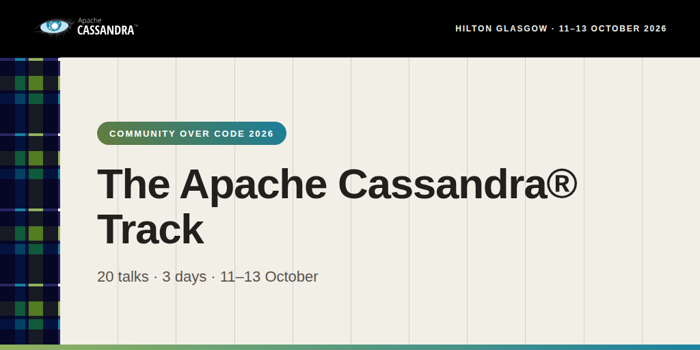
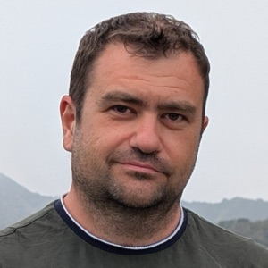

Twenty talks over three days
The Apache Cassandra® community is running a three-day track at Community Over Code 2026, the official conference of the Apache Software Foundation, at the Hilton Glasgow.
Twenty sessions, from twenty-seven speakers across a dozen organisations, cover the protocol behind multi-shard transactions and the formal methods used to check it, the storage engine work landing in 6.0, and what it takes to run the database at scale.
Event info
Community Over Code is the Apache Software Foundation’s flagship conference, bringing together committers, contributors and users from across all ASF projects. Glasgow 2026 runs 11-14 October with more than 160 sessions across 18 tracks.
-
Dates: 11-14 October 2026; the Cassandra track runs Sunday 11 to Tuesday 13 October
-
Venue: Hilton Glasgow, 1 William Street, Glasgow, G3 8HT
-
Room: Tay, for every session in the Cassandra track
-
Registration and full schedule: communityovercode.apache.org
Committers of any ASF project are eligible for a discounted registration rate.
Sunday 11 October
10:20 — Apache Cassandra: A Normal Database
Scott Andreas — Engineering Manager, Core Databases, Apple, Inc.
Cassandra’s Dynamo roots produced a database with tradeoffs that weren’t always familiar to users. This presentation puts together the puzzle pieces of years of work in the community: Transactional Metadata, distributed transactions, mutation tracking, flexible placements and tablets, storage-attached indexes. Together they show what Apache Cassandra is becoming, a normal database that works the way users expect.
11:10 — Unlocking Performance: Profiling Cassandra 6.0 with the New Built-In CPU Profiler
Bernardo Botella Corbi — Software Engineer, Apple
CASSANDRA-20854 introduced a native CPU profiler to the Cassandra toolset. This session covers how to use it and how to read its results, load-testing the features 6.0 is set to introduce, including Accord, change data capture and constraints.
14:20 — Automating Your Cassandra Operations With Apache Cassandra Sidecar
Isaac Reath — Engineering Team Leader, Bloomberg
Andres Beck-Ruiz — Bloomberg
Bloomberg replaced its proprietary sidecar with Apache Cassandra Sidecar. This talk covers Sidecar’s architecture and features, how it was integrated into Bloomberg’s managed Cassandra platform, the upstream contributions that made it fit, and practical workflows you can use to automate operational tasks today.
15:10 — Cassandra 6.0 write performance improvements
Dmitry Konstantinov — System Architect, NetCracker Technology
A year of source-level optimisation work on the write path: request decoding, data validation, coordination, memtable allocation and flushing, compaction, and metrics collection. Includes the benchmarking setup and tooling used to find each bottleneck, and the optimisation patterns that generalise.
16:10 — Accord: the Protocol Behind Cassandra’s Multi-Shard Transactions
Fedor Ryabinin — Postdoctoral Researcher, IMDEA Software Institute
Cassandra 6.0 introduces strictly serializable multi-shard transactions that often complete in a single WAN round trip, enabled by Accord (CEP-15), which replaces Paxos. Rather than covering the implementation, this talk explains the protocol itself and traces the path from Paxos to Accord, the first leaderless protocol deployed in a widely used production system.
Monday 12 October
10:20 — Fully off-heap memtables

Kamil Leśniak — Software Engineer, IBM
Memtables are the single largest contributor to Cassandra’s garbage collection overhead. This talk describes the final stage of a long progression: a fully off-heap memtable implementation building on the trie memtable introduced in CEP-19, and a cornerstone of the flat key infrastructure required for CEP-57. Covers configuration, measured performance impact, and the engineering behind it.
11:10 — 50 Clusters a Night: Lessons from Migrating 400+ Cassandra Clusters at Scale
Carlos Rolo — Principal Engineer Open Source, NetApp Instaclustr
Piotr Walczak — Fellow Cloud Development Engineer, Pegasystems
Sebastian Machlowski — Director of Engineering, Pegasystems
Moving 400 Cassandra clusters is not 400 versions of the same problem. A purpose-built Migration API moved up to 50 clusters in a single night with zero downtime. This talk covers how it was designed, why production needed a different approach from dev and QA, and the operational reality: alert storms, platform limits, and a split-operations bug triggered by concurrency.
12:00 — Model Checking Cassandra’s Transaction Protocol using TLA+
Alexandre Siret — IMDEA Software Institute
Accord (CEP-15) is a complex leaderless protocol with multiple subtle optimisations, and it is the only leaderless protocol deployed in a broadly used production system, which makes correctness critical. This talk presents an effort to model and verify Accord in TLA+: the modelling approach, the challenges, and how model checking improved confidence in the protocol.
14:20 — Data Ingestion at Terabyte Scale with Cassandra Analytics
Serban Teodorescu and Bianca Stanciu — Software Engineers, Adobe
Alexandru Salajan — Site Reliability Engineer, Adobe
Rearchitecting an ingestion pipeline across 18 clusters, 8 AWS regions and 500+ instances, moving from SSTable loading to direct Spark-to-Cassandra writes. Covers transport options, deployment challenges, cost and performance, and a validation methodology for checking export accuracy against production snapshots.
14:20 — Model Guided Fuzzing of Accord
Stefan Stoicescu — TU Delft, Software Engineering Research Group
Leaderless consensus achieves optimal latency at the cost of significant complexity during fault recovery, and non-trivial linearizability bugs can occur in Accord’s recovery logic under specific failure conditions. Finding them by standard trace-guided fuzzing is infeasible. This talk presents a model-guided approach that maps concrete executions to abstract TLA+ states, turning an unbounded trace-discovery graph into a usable coverage metric.
15:10 — Authentication Negotiation in Apache Cassandra (CEP-50)
Joel Shepherd — Principal Software Engineer, Amazon.com
Cassandra currently supports a single authenticator per node, which makes migrating between authentication methods hard and diverse client types harder. CEP-50 lets clients advertise the methods they support while the server retains the decision. Covers the current protocol flow, how negotiation extends it, and real implementation problems, including mapping external identities such as AWS IAM principals to database roles.
16:10 — High-Performance Analytics on Cassandra: Enabling New Workloads
Francisco Guerrero and Saranya Krishnakumar — Software Engineers, Apple, Inc.
Analytical workloads mean full table scans and long-running pipelines that compete with latency-sensitive production traffic. The Cassandra Analytics library sidesteps the read/write path entirely, interacting instead with Cassandra Sidecar for direct SSTable access and cluster metadata. This talk covers the integration and how both projects will evolve alongside Cassandra’s emerging features.
17:00 — Building a Modern CQL CLI for Apache Cassandra
Hayato Shimizu — CTO, AxonOps
cqlsh has long been the primary interface to Cassandra. CQLAI is an open source alternative, Apache 2.0 licensed, aiming at fast startup, distribution as a single binary, and no Python runtime dependency. Includes a live demo, import and export in CSV, JSON and Parquet, and lessons from building open source tooling around Cassandra.
Tuesday 13 October
10:20 — Initial Performance Evaluation of Cassandra Accord with NoSQLBench
Youki Shiraishi — Researcher, NTT, Inc.
A code-informed benchmark study of Accord using NoSQLBench, with workloads inspired by YCSB-style account-transfer and balance-check patterns. Preliminary findings on how contention affects fast-path success, whether read-modify-write transactions carry substantial overhead over read-only ones, and how much the Ephemeral Read optimisation delivers.
10:20 — Solving tombstones and partitioning with flat keys and tries (CEP-57)
Branimir Lambov — Software Engineer, IBM/DataStax
Christophe Bornet — Software Engineer, IBM
Manual partitioning strategy selection and the inability to sort between partitions cause a great deal of user frustration, and are a stumbling block to efficient materialized views and global secondary indexes. Tombstone handling is a challenge to even experienced users. CEP-57 addresses both through byte-comparable key translations that flatten the key hierarchy into a single byte sequence, combined with trie-based access structures.
11:10 — Much Ado About Nothing: Making Cassandra 4→5 Upgrades Predictable and Low-Risk
Mariah McLaughlin — Developer Advocate, NetApp Instaclustr
Carlos Rolo — Principal Engineer Open Source, NetApp Instaclustr
Cassandra 5.0 brings changes worth upgrading for, and enough architectural change that a naive rolling upgrade carries real risk, particularly for clusters with heavy secondary index usage or customised compaction. This talk covers per-cluster assessment, staged rollout with validation checkpoints, preserved rollback options, and where teams tend to go wrong.
12:00 — Zstd dictionary compression
Stefan Miklosovic — Software Engineer, NetApp
Zstd has been Cassandra’s go-to compression algorithm since 4.0. Dictionary compression, implemented under CEP-54 and available in 6.0, can improve the compression ratio significantly further and reduce storage cost accordingly. An overview of the solution, how it is used in practice, and which data profiles suit it.
14:20 — Running Apache Cassandra in a Zero Trust Environment with Mutual TLS
Francisco Guerrero — Software Engineer, Apple, Inc.
Zero Trust rejects the assumption that traffic inside a network boundary can be trusted. This talk covers running Cassandra, Cassandra Sidecar and Cassandra Analytics under a strict Zero Trust model with mutual TLS: configuration across internode and client-to-node communication, certificate identities as the basis for authentication and authorization, certificate rotation, and migration from password-based authentication.
15:10 — CEP-38: The Management Port Decision: A Live Architecture Trade-off in Apache Cassandra
Maxim Muzafarov — Open-source Software Engineer
Cassandra management has always been fragmented across JMX, REST and nodetool, each requiring its own implementation of every operation. CEP-38, accepted in October 2025, introduces a unified CQL-based management API. This talk walks through the port decision: why sharing port 9042 proved impossible, what a dedicated port costs operationally, and how the execution model enforces what is permitted. Ends with a live demo of registering and executing a new command.
16:10 — CEP-59: Graceful Disconnect — Draining Client Connections During Cassandra Node Shutdown
Jane He — IBM
Rolling restarts are routine, but they can still look disruptive from the client side: drivers ignore topology DOWN events, and existing mechanisms only signal per request, so drivers keep sending until connections fail. CEP-59 adds an in-band protocol event letting a node tell clients it intends to close, turning abrupt failure into controlled draining. Includes a demonstration of the behaviour before and after.
Registration
Registration and the full four-day schedule across all 18 tracks are at communityovercode.apache.org. ASF committers are eligible for a discounted rate.
If you are attending and would like to help with the Cassandra track, introduce yourself on the developer mailing list or in the #cassandra channel on ASF Slack.
Code of Conduct
Community Over Code operates under the terms of the ASF’s Code of Conduct.